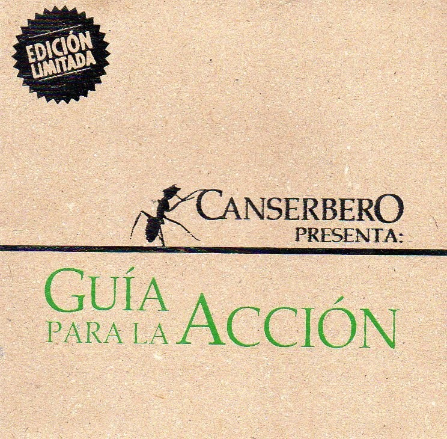
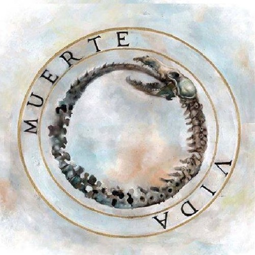
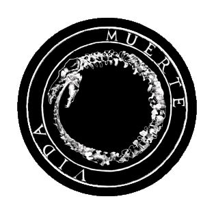

“Nuestra Doctrina No Es Un Dogma, Es Una Guía Para La Acción”
Nuestra Doctrina No Es Un Dogma, Es Una Guía Para La Acción
es un álbum recopilatorio o mixtape del
rapero venezolano Canserbero sacado
gratis a la internet en 2009.
Este álbum recopila temas de Canserbero
de los años 2008-2009 y contiene muchas canciones
de Rap Conciencia.

Años activo: 1999-2015
Disco vida (2010)
Vida es el primer álbum de estudio como solista
del rapero y compositor venezolano
Canserbero.
El álbum cuenta con 17 canciones,
la gran parte producidas por Kpú.
Contiene colaboraciones de Lil Supa y Kpú.

Años activo: 1999-2015
Disco Muerte(2012)
Muerte es el segundo y último álbum de estudio del rapero
y compositor venezolano Canserbero.
El disco cuenta con 14 temas,
los cuales hablan acerca de la muerte,
la violencia, el crimen y el desamor.
Es considerado uno de los álbumes más
importantes en la historia del rap latino.

Años activo: 1999-2015